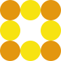

The CSS border-image property allows you to specify an image to be used instead of the normal border around an element.
The border-image-source property specifies the image to be used as the border around an element:
We will use the following image (called "border.png"):

As well, we use another image (called "border2.png"):
The basic requirements are a picture for a frame should be symmetrical.
Note:Internet Explorer 10, and earlier versions, do not support the border-image-source property.
The border-image property takes the image and slices it into nine sections, like a tic-tac-toe board.
It then places the corners at the corners, and the middle sections are repeated or stretched as you specify.
Note: For border-image to work, the element also needs the border property set, like border: 10px solid transparent;!
Here, the middle sections of the image are repeated to create the border:
The code: border-image: url(border.png) 30 round;
Here, the middle sections of the image are stretched to create the border:
The code: border-image: url(border.png) 30 stretch;
Tip: The border-image property is actually a shorthand property for the border-image-source, border-image-slice, border-image-width, border-image-outset and border-image-repeat properties.
So, the border-image-source property specifies the path to the image to be used as a border (instead of the normal
border around an element).
Tip: If the value is "none", or if the image cannot be displayed, the border styles will be used.
Note: The border-image-slice property can take from one to four values. If the fourth value is omitted, it is the same as the second. If the third one is also omitted, it is the same as the first. If the second one is also omitted, it is the same as the first.
Different slice values completely changes the look of the border:
border-image: url(border.png) 50 round;
border-image: url(border.png) 20% round;
border-image: url(border.png) 30% round;
Here we separated the property for slice and added the paras for Safari 3.1-5 and Opera 11-12.1
The code: border-image: url(border.png) round; border-image-slice: 10%;
The border-image-width property specifies the width of the border image:
border-image-width: 10px;
border-image-width: 20px;
border-image-width: 30px;
Specifies the amount by which the border image area extends beyond the border box
Place the border image 10 pixels outside the border edges of an element:
border-image-outset: 10px;
Note: The border-image-outset property can take from one to four values (top, right, bottom, and left sides). If the fourth value is omitted, it is the same as the second. If the third one is also omitted, it is the same as the first. If the second one is also omitted, it is the same as the first.
The border-image-repeat property specifies whether the border image should be repeated, rounded or stretched:
Here, the image tiles to fill the area. Tiles are divided if necessary.
Here, the image tiles to fill the area. The image is rescaled if necessary, to avoid dividing tiles.
Here, the image is stretched to fill the area.
Отже, властивість дозволяє встановлювати рамку елементa як зображення. Основні вимоги — зображення для рамки повинно бути симетричним.
Тепер задамо необхідні значення для створення рамки-зображення, що включає в себе такі значення:
{border-image: width source slice repeat outset;}
при цьому, значеннями по замовчуванню є: {border-image: 1 none 100% stretch 0;}.
width: 360px; height: 200px;
border-style: solid;
border-image-width: 15px;
border-image-source: url(шлях_до_зображення.png);
border-image-slice: 30;
border-image-repeat: stretch;
width: 360px; height: 200px;
border-style: solid;
border-image-width: 15px;
border-image-source: url(шлях_до_зображення.png);
border-image-slice: 30;
border-image-repeat: round;
border-image-width
Ця властивість задає ширину зображення для границь елементу. Якщо ширина не задана, то по замовчуванню вона
дорівнює 1.
Ширина задається в одиницях довжини — 'px' / 'em'. Можна задати від однї до чотирьох значень одночасно.
Якщо задано одне значення, то ширина всіх сторін рамки одинакова, а два значення задають ширину верхньої-нижньої
та
правої-лівої і т.д.
Якщо задано в процентах (%) то ширина рамки элемента вираховується відносно розміру зображення. Горизонтальні
відносно ширини, вертикальні — відносно висоты.
Якщо задано просто в числовому значенню, то це значення на яке множиться значення border-width.
div {border-image-source: url(route_to_image.png);}
Ця властивість визначає шлях до зображення, яке буде використовуватись для оформлення границь блока
url('шлях_до_зображення.png') - це відносний чи абсолютний шлях до зображення.
Ця властивість визначає розмір частин зображення, які використовуються для оформлення границь елементу і ділить
його (зображення) на дев'ять частин:
чотири кути, чотири краї між кутами та центральну частину.
'border-image-slice' може мати такі значення:
Число - числове значення в 'px'. ( Розмір частин рамки можна задавати за допомогою одного, двух, трьох чи чотирьох
значень. Одно значення встановлює границі одинакового розміру для кожної сторони елементу. Два значення: перше
визначає розмір верхньої та нижньої границі, друге — правої та лівої. Три значения: перше визначає розмір верхньої
границі, друге — правої та лівої, а третє — нижньої границі. Чотири значення: визначають разміри верхньої, правої,
нижньої та лівої границі).
% - проценти. Розміри границь розраховуються відносно розміру зображення. Горизонтальні відносно ширини,
вертикальні
— відносно высоти.
fill - Це значення задають разом з числом чи процентним значенням. Якщо воно задано то воно, не обрізається
всередині внутрішніми краями рамки, а заповнює також область всередині рамки.
width: 300px;
height: 300px;
border-image-width: 40px;
border-image-source: url("./img/borderimg3.png");
border-image-slice: 40;
border-image-repeat: round;
Відступ рамки-зображення задається за допомогою будь-якого додатнього числа, яке вказується в 'px' чи 'em'.
Синтаксис цього значення: div {border-image-outset: 10px;}
Крім того, це значення може бути задане числом - це число, на яке множиться border-width.
Значенням border-image може виступати не тільки якесь зображення, але і градієнтна заливка.
Тoвщину рамки можна регулювати властивістю 'border-width'.